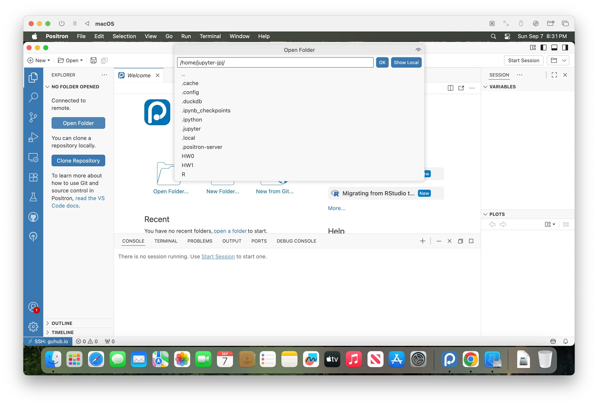

Connecting to Positron and Accessing Assignments
For both MacOS and Windows, you can download the latest version of Positron from its homepage. Once you have downloaded and installed it, you can click the appropriate Tab below for instructions on connecting to your JupyterHub space through Positron:
First things first, note that this guide used a brand new installation of MacOS Sequioa 15.6.1 from scratch:
But also that, a fresh install of Windows 11 was used separately to test that the steps here work on Windows as well!
My hope is that the screenshots generated with this clean installation will therefore better resemble what you see when you first go to connect!
Step 0: Using Firefox or Chrome
Since it’s a fresh installation, the first thing I did was open up Safari and download a new browser, since the web interface we’re using (JupyterHub) works best on either Chrome or Firefox. Personally I use Firefox, but since I think the majority of the class uses Chrome, I’m using that here as well:

Step 1: Download Positron
Here, after accepting the license agreement, I downloaded the MacOS 11+ (universal) installer, though you can choose one of the Arm64 or x64 options for a smaller file size if you know which one of these architectures your Mac uses.
Step 2: Install Positron
On MacOS, once the .dmg file finishes downloading, double-clicking it (or opening it from within Chrome) should pop up a window that looks as follows, within which you should drag the Posit icon over onto the Applications icon
The installation starts once you drag the icon onto the Applications folder – you should then see a “Copying” progress bar like the following:
On Windows, instead of this dragging-to-Applications approach, you should double-click on the Positron installer and then follow the setup instructions which appear (you can just use all of the default settings!)
Step 3: Open Positron
Once the installation process completes, you should see Positron in wherever you access the Applications on your Mac. For example, here you can see it included at the bottom of the Launchpad interface:
If you can’t find Launchpad, you can also activate MacOS’s Spotlight using the keyboard shortcut Cmd-SpaceCmd-Space, then start typing “Positron” until the “Positron – Open” option appears:
If you see the following popup message when you try launching Positron, you can continue by clicking “Open”
And, once it has successfully opened, you should see the main interface that looks as follows:
Step 4: Understanding Local vs. Remote
Note that when you first open Positron on your laptop like this, it uses the resources on your local laptop. For example:
- The displayed files and folders will be files and folders residing on the hard drive of your local machine, and
- If you run Python or R commands, Positron will execute those using your local R and Python installations
For this reason, we’ll call this Positron “running locally”, which is not how we want to use Positron in this course!
Instead, we want to connect Positron to the remote JupyterHub server set up for the course. Once Positron has connected to this server (after you’ve completed the following steps here), we’ll call that Positron “running remotely”, since this means that:
- The files shown in Positron will be files and folders residing on the GIS course server, and
- If you run Python or R commands, Positron will execute those on the GIS course server, which already has the necessary GIS libraries installed, and also has more computational resources (64 cores, 128 GB of RAM, and 1.5TB of hard drive space) than your local laptop!
When in doubt, one quick way you can tell which “mode” Positron is in (local vs. remote) is to open a new Terminal: In the menubar at the top of Positron, you can click **“Terminal” -> “New Terminal”, or you can use the keyboard shortcut Ctrl-Shift-`Ctrl-Shift-`.
If the terminal (which should open in the bottom-left panel of Positron) looks as follows, with a percent sign % right before the portion where you’re able to start typing, you are likely running locally, since MacOS’s default Terminal uses this percent sign character % to indicate the start of the command prompt.
If instead the terminal you see looks as follows, with a dollar sign $ right before the portion where you’re able to start typing, you are likely running remotely, since the Ubuntu operating system installed on the course’s server uses this dollar sign character $ to indicate the start of the command prompt.
In other words, right now you should see the local version, with the percent sign %. But, after connecting over the following steps, you’ll know you have successfully “warped” from local to remote Positron when you see the $ in the terminal.
Step 6: Opening Your GUHub Home Folder in Positron’s Explorer Panel
If you’ve gotten this far, and you see the SSH: guhub.io text in the corner next to the “Warp Button” icon, you’re 99% of the way there! All that’s left is opening your GUHub home folder within Positron’s Explorer Panel, so that you can access all of the files and folders you’ll be working with during the semester.
To do this, you can either:
- Click on the “Open Folder…” button that appears in the main (upper left) panel of the Positron interface, or
- Click on the Explorer Panel icon, the icon at the top of the left-hand sidebar in Positron (it kind of looks like the “copy” icon in a lot of interfaces: two pieces of paper stacked on top of each other), then click the “Open Folder” button which appears once the full sidebar panel pops out
In either case, you should now see a Command Palette appear at the top of the interface, this time with:
- The title “Open Folder”, followed by
- A text box containing a filepath that should look something like
/home/jupyter-YOUR_NETID, and finally - A dropdown listing of a set of files
Like in the following screenshot:

Don’t worry about clicking on any of these elements (for example, for sanity purposes, please don’t click on the HW0 folder just yet). Instead, just press Enter.
After pressing Enter, Positron will likely ask you for your password again. But, once you’ve entered that, the Explorer Panel sidebar should now “refresh” and should show a listing of the files and folders within your home directory on GUHub, like in the following screenshot:
As you can see in that screenshot, Positron may pop up a box asking you if you trust the authors of the files in this folder. This turns out to be not very much of a security concern, and more of a “relic” of how Positron would be running if you were running it locally.
Here, since you’re already connected to the server and running Positron remotely, it’s basically asking you if you want the files placed on the server to be able to execute code on the server… which is exactly what you want to do in order to work on the assignments in the course!
I write all that out just to clarify that this popup is not asking whether or not you trust the files to run on your local laptop – the execution of all the code, once you’ve connected to the course server using the Warp Button, is carried out on the server itself, so that you don’t need to worry about e.g. malicious code being run on your laptop!
So, hopefully that eases your mind about this possibly-scary-looking popup, in which you should click the button labeled “Yes, I trust the authors”2.
Once you have approved the message in that popup, you should now (more clearly) see the files in the File Explorer sidebar on the left side of the interface:
Step 7: Opening and Completing HW0
Now, you’re ready to get to work on the excruciatingly difficult HW0 assignment! Click on the “HW0” folder within the File Explorer sidebar to expand it and view its contents, then click on the ppol6805_hw0.qmd file, which should open in the main (upper-left) panel of Positron like in the following screenshot:
Once it is open, all you need to do is answer the single question (which asks, what is \(1 + 1\)?), storing the numeric result in a variable named q1_solution. This should only require one line of code, which you should write in the code cell which has # label: q1-response at the top – i.e., you should write this line of code immediately after this # label: q1-response line:
You can then use the keyboard shortcut Cmd-SCmd-S to save your changes, and you’re done!
We will just check whether or not you’ve added this new line of code to the ppol6805_hw0.qmd file, as our way of checking who has successfully been able to connect to the course server using Positron.
Step 8: Disconnecting from the Server
Since you’ve now completed and saved HW0, technically you could just close the Positron window and all would be fine.
However, since I know that exiting this abrubtly can be nerve-wracking for some (since many other server setups do require a more involved disconnection process), a more “graceful” and technically-responsible way to end your Positron remote session would be to click the Warp Button again, and then click the “Close Remote Connection” option which should appear as the last option in the Command Palette at the top of the Positron interface:
At this point, Positron should return you back to its local mode, and now you can close the window without any stress about suddenly disconnecting from the server üòå
From now onwards, that will be your workflow for viewing and working on assignments! Instead of using the “HW0” folder like we did here, for example, we’ll add a “HW1” folder soon, and you’ll be able to log in and open ppol6805_hw1.qmd to start work on that first graded assignment. Onwards and upwards!
Footnotes
In class I walked through a more laborious process, where we set up and added an entry into a special
configfile, but since lots of people are having issues with this approach, here we’re skipping theconfigfile entirely, and instead just entering the two pieces of information manually into the Command Palette↩︎You can also check the “Trust the authors of all files in the parent folder” checkbox, if you’d like, though it’s irrelevant since we won’t be loading or executing any files from that parent folder.↩︎